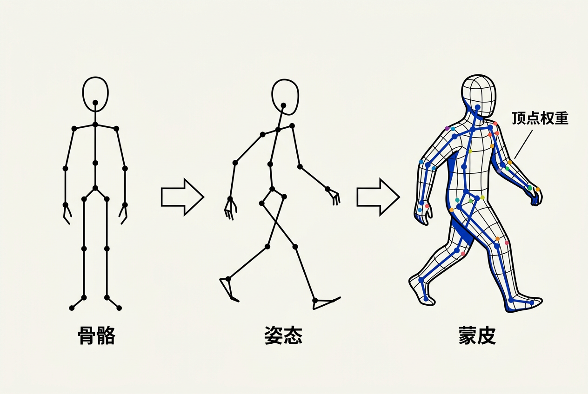

第13章：动画系统 — 零基础讲义
讲义说明
本讲义基于 Jason Gregory 所著《Game Engine Architecture Volume II》第4版第13章（Animation Systems, p.236-334），逐节翻译推导。
本版插画由 ImageGen + Guizang 材质插画标准流程生成。
学习目标
- 理解骨骼、关节、姿态的基本概念
- 掌握蒙皮（Skinning）的数学原理——骨骼如何驱动顶点
- 理解动画混合（Blending）的核心算法
- 了解动作状态机（ASM）的基本架构
- 了解动画压缩和动作匹配（Motion Matching）
13.1 角色动画类型
13.1.1 四种动画技术
13.1.1.1 从关键帧到程序化
| 类型 | 原理 | 用途 |
|---|---|---|
| 骨骼动画 | 骨架驱动蒙皮网格 | 角色行走/奔跑/战斗（本章重点） |
| 顶点动画（Morph Target） | 顶点位置直接插值 | 面部表情、口型同步 |
| 物理动画（Ragdoll） | 物理模拟驱动骨骼 | 死亡倒地、受击反应 |
| 程序化动画（IK等） | 算法实时计算姿态 | 脚踩地形、手抓物体 |
13.1.1.2 关键帧动画 vs 骨骼动画
关键帧动画（2D/老式3D）： 美术师设定几个关键时刻的姿态，中间帧自动插值。适用于简单动画。骨骼动画（现代3D）： 角色有一副内部骨架，动画数据是骨骼的旋转/平移信息，通过蒙皮驱动外层网格——这是本章的核心内容。
13.2 骨骼

13.2.1 骨骼层级结构
13.2.1.1 关节与骨骼
骨骼实际上是一个层级化的关节（Joint）树。每个关节有：父关节索引（根关节没有父）、绑定姿态的局部变换（相对于父关节）、逆绑定矩阵（把顶点从模型空间转到关节局部空间）
// 简化的骨架结构
struct Joint {
int parentIndex; // 父关节（根=-1）
Matrix4x4 invBindPose; // 逆绑定姿态矩阵
string name; // "Spine1", "LeftElbow" 等
};
// 典型的角色骨架层级
Root (Hips)
├── Spine1
│ └── Spine2
│ └── Neck → Head
├── LeftUpperLeg → LeftLowerLeg → LeftFoot
└── RightUpperLeg → RightLowerLeg → RightFoot13.2.2 绑定姿态（Bind Pose）
13.2.2.1 "T-Pose"或"A-Pose"
绑定姿态是美术师创建模型时的默认姿态——角色双臂展开（T-Pose）或自然下垂（A-Pose）。所有蒙皮权重以这个姿态为基准计算。动画的每一帧数据都是相对于绑定姿态的偏移。
13.3 姿态
13.3.1 姿态的表示
13.3.1.1 局部姿态 vs 全局姿态
// 局部姿态：每个关节相对于父关节的变换
struct LocalPose {
Quaternion rotation; // 相对于父关节的旋转
Vector3 translation; // 相对于父关节的平移
Vector3 scale; // 通常为 (1,1,1)
};
// 全局姿态：从递归计算得出——第5章学过的变换链
Matrix4x4 CalcGlobalPose(int jointIdx) {
if (jointIdx == 0) // 根关节
return localPoses[0].ToMatrix();
int parent = skeleton[jointIdx].parentIndex;
return CalcGlobalPose(parent) * localPoses[jointIdx].ToMatrix();
}13.4 动画片段
13.4.1 动画数据的结构
13.4.1.1 一个动画片段包含什么
// 动画片段 = 每根骨骼在每个关键帧的姿态信息
struct AnimationClip {
float duration; // 时长（秒）
float frameRate; // 采样率（通常 30fps）
int boneCount; // 骨骼数量
BoneTrack* tracks; // 每条骨骼的动画曲线
};
struct BoneTrack {
Keyframe* rotations; // 四元数旋转关键帧
Keyframe* translations; // 平移关键帧（通常只根骨骼有）
};
// 关键帧之间通过插值（LERP/SLERP）得到中间姿态13.5 蒙皮
13.5.1 线性混合蒙皮（LBS）
13.5.1.1 核心公式
// 蒙皮：每个顶点 = 多个骨骼对它影响的加权和
for each vertex v:
Vector3 skinnedPos = (0,0,0);
for each bone b affecting v (通常 4 根):
skinnedPos += v.bindPos * bonePalette[b] * weight[b];
// bonePalette[b] = 全局姿态矩阵 × 逆绑定姿态矩阵13.5.1.2 "糖果纸效应"问题
LBS 的经典缺陷：前臂旋转时肘部顶点会"内陷"（像糖果纸被拧）。解决方案：双四元数蒙皮（Dual Quaternion Skinning）——用双四元数替代矩阵，保持体积。代价略高但效果明显改善。
13.6 动画混合
13.6.1 混合类型
13.6.1.1 四种常见混合
| 混合类型 | 做法 | 用途 |
|---|---|---|
| 线性插值混合 | 两个片段之间 LERP/SLERP | 走→跑过渡 |
| 加法混合（Additive） | 偏移量叠加到基础姿态上 | 边跑边挥手、呼吸起伏 |
| 分层混合（Layered） | 上半身和下半身不同动画 | 跑步+开枪、走路+挥手 |
| 交叉淡入淡出 | 重叠时间窗内渐变权重 | 动画切换时防"跳帧" |
13.6.1.2 混合树示例
// 简单的1D混合：根据速度在Idle/Walk/Run之间混合
float blend = (speed - walkSpeed) / (runSpeed - walkSpeed);
Pose blendedPose = Lerp(walkPose, runPose, blend);
// 2D混合：根据水平/垂直速度在8个方向动画之间混合
Pose blendedPose = Blend2D(
forwardPose, backwardPose, leftPose, rightPose,
velocity.x, velocity.y
);13.7 动画状态机
13.7.1 动作状态机（ASM）
13.7.1.1 状态 + 过渡
// 典型的角色动画状态机
[Idle] ←→ [Walk] ←→ [Run] ←→ [Sprint]
↕ ↕
[Jump] [Attack1] → [Attack2] → [Attack3]
↓
[Fall] → [Land]
// 过渡条件
Idle → Walk: speed > 0.1
Walk → Run: speed > 3.0 且 按着Shift
Run → Sprint: speed > 6.0 且 按着Shift
Any → Jump: 按下空格 且 在地面上本章核心洞察
动画系统是"时间艺术"在代码中的体现——它在每一帧把时间参数映射为几十根骨骼的姿态，再通过蒙皮驱动数万个顶点。它的工程挑战不在"某一帧"，而在帧之间的平滑过渡——动画混合、状态机、交叉淡入淡出都是为了解决"不让玩家看到切换"的问题。
三条动画准则：
1. 四元数是骨骼动画的"第一公民"： 存储和插值都用四元数
2. 混合比单独播放更复杂但更重要： 现代游戏中几乎没有"纯粹播一个动画片段"的时刻
3. IK让动画适应环境： 纯数据动画无法处理地形高度变化——IK 是让脚"踩在地面上"的答案
📝 课后练习题（含答案）
子关节的全局变换 = 父关节全局变换 × 子关节局部变换。动肩膀（父），整个手臂（子）跟着动——这就是层级变换链。这和第五章学的世界变换链是同一个原理。
公式：v' = Σ(wi × Mi × v)，其中 Mi=骨骼i的蒙皮矩阵，wi=权重。糖果纸效应源于LBS在旋转插值时的体积塌缩——用双四元数蒙皮（DQS）替代矩阵插值来解决。
常规混合：两个完整姿态取加权平均。加法混合：基础姿态 + 偏移姿态的差值。好处："边跑边挥手"——跑是基础动画，挥手是叠加在上面的偏移，两者互不影响。
如果状态瞬间切换（如Idle直接跳到Run），动画会"跳帧"——视觉上角色突然变了姿态。过渡时长（如0.2s）在两个动画之间做交叉淡入淡出，让切换平滑自然。
🤖 qAagent 零基础问答区
FK： 从上往下算——"肩膀转了30°→肘在X→腕在Y"（已知关节角度求末端位置）。IK： 从下往上算——"手要碰到桌子上的杯子→肘应该在Z→肩膀应该转θ°"（已知末端目标求关节角度）。FK是"我动了这里所以那里到了"。IK是"我要那里到那里所以这里应该这样动"。IK在游戏中用于脚踩不同高度地面、手抓物体等自适应场景。
一个30fps的60秒动画，50根骨骼，每根4个通道(四元数)，= 360KB未压缩。压缩技巧：① 去掉不动的通道（很多骨骼只有旋转，没有平移）② 降低精度（四元数从32bit降到16bit，误差 < 0.001）③ 关键帧剔除（连续帧值差不多就只保留端点）④ 曲线拟合（用贝塞尔曲线替代密集采样点）。综合可达 10:1-20:1 压缩比。
- 学习目标
- 学习目标
- 13.1 角色动画类型
- 13.1.1 四种动画技术
- 13.1.1.1 从关键帧到程序化
- 13.1.1.2 关键帧动画 vs 骨骼动画
- 13.2 骨骼
- 13.2.1 骨骼层级结构
- 13.2.1.1 关节与骨骼
- 13.2.2 绑定姿态（Bind Pose）
- 13.2.2.1 "T-Pose"或"A-Pose"
- 13.3 姿态
- 13.3.1 姿态的表示
- 13.3.1.1 局部姿态 vs 全局姿态
- 13.4 动画片段
- 13.4.1 动画数据的结构
- 13.4.1.1 一个动画片段包含什么
- 13.5 蒙皮
- 13.5.1 线性混合蒙皮（LBS）
- 13.5.1.1 核心公式
- 13.5.1.2 "糖果纸效应"问题
- 13.6 动画混合
- 13.6.1 混合类型
- 13.6.1.1 四种常见混合
- 13.6.1.2 混合树示例
- 13.7 动画状态机
- 13.7.1 动作状态机（ASM）
- 13.7.1.1 状态 + 过渡
- 本章核心洞察
- 📝 课后练习题（含答案）
- 🤖 qAagent 零基础问答区